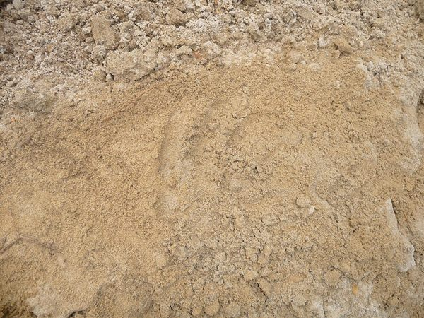
Sandy soil
Gritty, warms fast, dries out within hours. Nutrients wash straight through.
Fix: dig in compost and well-rotted manure every year; mulch thickly; choose drought-tolerant plants like rosemary and lavender.
Happy roots start with happy soil. Let's get your hands dirty.
Level 02 · Core skillSoil is not dirt. A single teaspoon of healthy soil contains more living organisms than there are people on Earth. Get the soil right and watering, feeding and disease control all get easier.
Soil is a mix of mineral particles in three sizes. The proportions — not the brand on the bag — determine how water and air move through it.
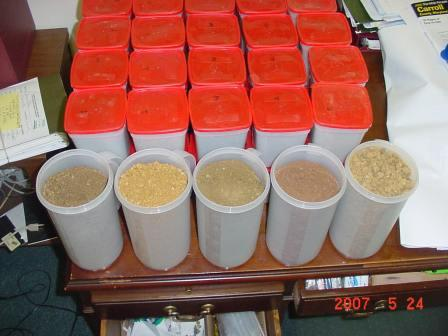
Loam is the balance: roughly 40% sand, 40% silt, 20% clay. It holds moisture without waterlogging and lets roots breathe. Almost every garden goal is “move toward loam”.
The jar test. Fill a jar one-third with soil, top up with water and a drop of dish soap. Shake hard, then let it settle. Sand drops within a minute, silt in a few hours, clay in a day. Measure the layers to estimate your percentages.
Identify yours, then follow the “fix” — every soil can be improved.

Gritty, warms fast, dries out within hours. Nutrients wash straight through.
Fix: dig in compost and well-rotted manure every year; mulch thickly; choose drought-tolerant plants like rosemary and lavender.
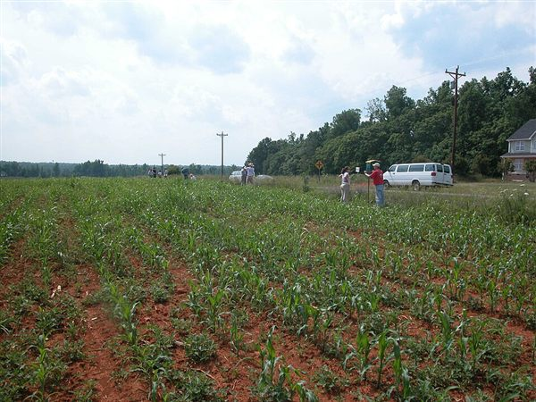
Sticky when wet, rock-hard when dry. Drains slowly and stays cold in spring.
Fix: add organic matter on top and let worms work it in. Never dig clay when wet — you create bricks. Consider raised beds.
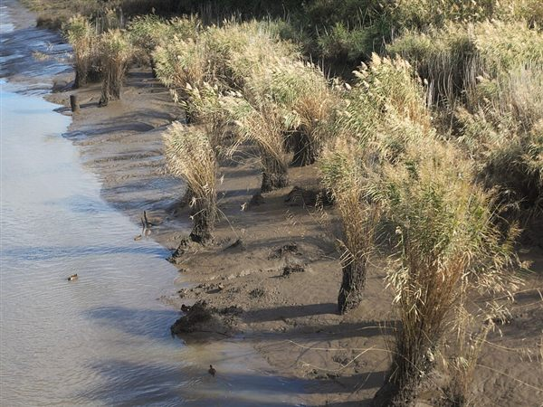
Smooth and floury, fertile and moisture-retentive — but easily compacted.
Fix: avoid walking on wet beds; add grit and compost to improve structure; mulch to stop surface capping.
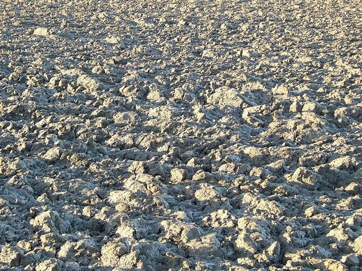
The ideal: crumbly, dark, holds moisture and drains freely. Most plants thrive.
Maintain: keep adding compost, rotate crops, and mulch annually. Loam degrades without organic matter.
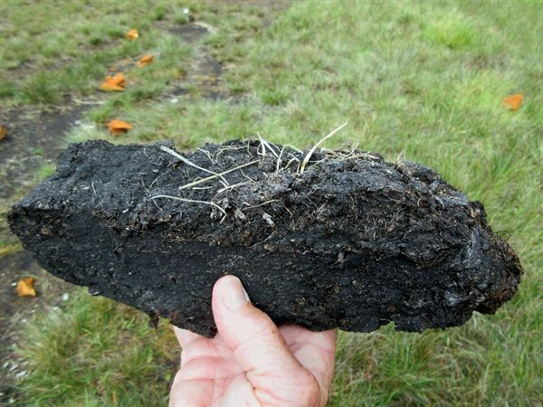
Dark, spongy, very acidic and waterlogged. Common in boggy regions.
Fix: lime to raise pH, add drainage channels, and grow acid-lovers like blueberries and rhododendrons. Avoid buying peat-based mixes.
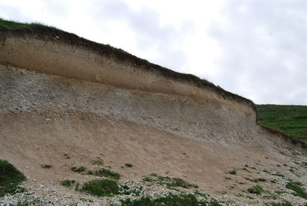
Pale, stony and alkaline. Dries quickly and locks up iron and manganese.
Fix: add plenty of compost and sulphur to acidify slightly; grow alkaline-tolerant plants such as lavender, clematis and cabbage.
Every soil type has a typical mineral make-up. The numbers below are approximate percentages by volume, along with how much of each soil to use in a pot indoors versus a bed outdoors.
| Soil type | Typical make-up | Natural pH | In indoor pots | In outdoor beds |
|---|---|---|---|---|
| Sandy | 80% sand · 10% silt · 10% clay | 6.0–7.5 | 20–30% of a houseplant mix; raise to 50–60% with grit for cacti and succulents. | Use as-is. Dig in 5–8 cm compost per season (about 20% by volume) and mulch thickly. |
| Clay | 20% sand · 40% silt · 40% clay | 6.5–8.0 | Max 10–20%, only in large pots and only if broken up — it compacts badly in small containers. | Work 10–20% compost into the top 15 cm each year. Never dig it while wet. |
| Silt | 10% sand · 80% silt · 10% clay | 6.0–7.5 | 20–30% at most, always blended with about 25% grit or perlite to keep it open. | Add 5 cm compost plus grit. Keep foot traffic off wet beds to prevent capping. |
| Loam | 40% sand · 40% silt · 20% clay | 6.0–7.0 | 50–70% of a general potting mix, with 20–30% compost and 10–20% perlite. | Ideal as-is. Top-dress 2–3 cm compost each spring and mulch annually. |
| Peat | Organic: 80–100% partly decayed plant matter | 3.5–5.0 | 30–50% for acid-lovers and seed mixes — use peat-free coir where possible. | Only for acid-loving plants. For vegetables, lime to pH 5.5–6.5 over several months. |
| Chalky | Loam plus 20–60% calcium carbonate | 7.5–8.5 | 10–20% only for alkaline-tolerant plants such as lavender and clematis. | Add 5–8 cm compost; use sulphur to lower pH slightly for acid-lovers. |
Percentages are by volume. Mix the ingredients dry, then dampen before filling pots.
| Purpose | Base soil | Organic matter | Drainage | Notes |
|---|---|---|---|---|
| General houseplants | 50% loam | 30% compost / coir | 20% perlite | Feed lightly from spring. |
| Succulents & cacti | 40% sandy soil | 20% compost | 40% pumice / grit | Water deeply, then dry out fully. |
| Seeds & cuttings | 0% soil | 50% coir | 50% perlite | Low nutrients prevent damping off. |
| Acid-lovers | 20% sandy soil | 50% ericaceous compost | 30% pine bark / grit | Keep pH around 4.5–5.5. |
| Ferns & moisture lovers | 30% loam | 60% compost / coir | 10% perlite | Keep evenly moist, never soggy. |
Read the percentages as starting points. A heavy clay needs far more organic matter than a sandy loam, and a terracotta pot dries faster than plastic. Adjust by feel: the mix should hold together when squeezed but crumble easily, and water should drain within seconds.
pH measures acidity on a 0–14 scale. Most garden plants prefer 6.0–7.0, where nutrients are most available. Outside that range, nutrients may be present in the soil but chemically locked away from roots.
Blueberry, rhododendron, azalea, camellia, pieris, heather, conifers.
Most vegetables, annuals, perennials, lawns and houseplants.
Lavender, clematis, cabbage, beetroot, lilac, buddleja.
Test before you treat. A simple probe or colour-kit test costs little and takes minutes. To raise pH, add garden lime. To lower it, add elemental sulphur or pine/leaf compost — but both take months. Never try to change pH by more than one point per season.
Good soil is about 50% solid and 50% pore space, split between water and air. Structure is how those particles clump into crumbs. Compacted soil loses its pores; water runs off and roots suffocate.
Compost is the single best investment you can make in any garden. It feeds soil life, improves structure in both sand and clay, and buffers pH.
Cheapest and simplest. Needs 1 m³ to heat up properly. Takes 3–12 months depending on turning.
Easy to turn, pest-resistant, good for small gardens. Batch sizes are limited, so run two.
Ideal for flats and balconies. Produces rich castings in 2–3 months. Keep it cool, dark and never add citrus in bulk.
Ferments everything, including cooked food and meat, in a sealed bucket. The output must still be buried or composted.
| Mix | Best for | Typical blend |
|---|---|---|
| All-purpose | Most houseplants, seedlings, vegetables in pots | 60% peat-free compost, 20% bark, 20% perlite |
| Gritty / cactus | Succulents, cacti, lavender, rosemary | 40% compost, 40% pumice or grit, 20% coarse sand |
| Moisture-retentive | Ferns, hostas, bog plants | 70% compost, 20% coir, 10% perlite |
| Seed / cutting | Germinating seeds, rooting cuttings | 50% coir, 50% perlite — low nutrients, high air |
| Ericaceous | Blueberries, camellias, rhododendrons | Acidic compost with bark and sulphur |
Avoid garden soil in pots: it compacts, drains badly and can carry weed seeds and pests. Peat-free mixes are now widely available and perform well with a little extra feeding.
A good potting mix is a recipe, not a single product. These ingredients are used in indoor and outdoor containers — each has a job and a recommended share of the finished mix.
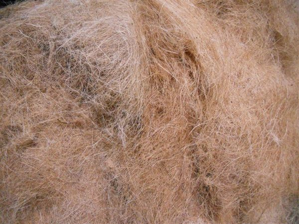
Washed, ground coconut husk. A peat-free base that holds water and rewets easily.
Watch: low in nutrients. Buy washed/buffered coir and feed separately.
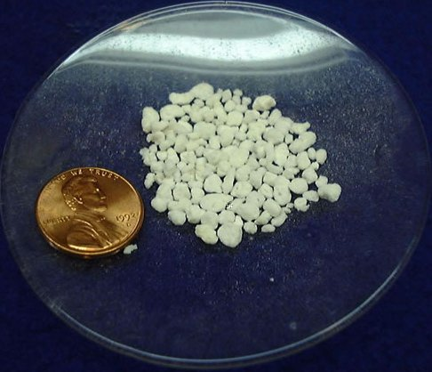
Expanded volcanic glass. Light white granules that create air pockets and speed drainage.
Watch: dusty when dry and floats to the surface. Wet it before mixing.
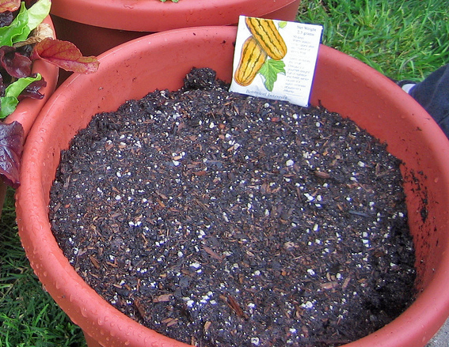
A blended base of sterilised loam, organic matter and drainage — the backbone of container growing.
Watch: never use garden soil straight from the ground in pots.
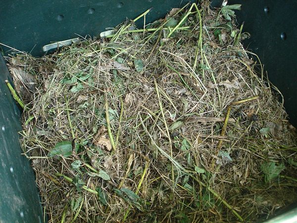
Well-rotted organic matter that feeds soil life, holds moisture and improves crumb structure.
Watch: only use mature compost — too much stays wet and can compact.
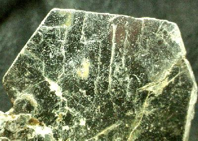
Expanded mica flakes that hold water and nutrients, then release them back to roots.
Watch: too much makes a mix soggy — skip it for succulents.
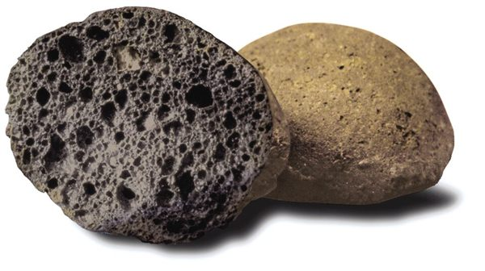
Fired clay balls used as a drainage layer, top dressing or soil-free growing medium.
Watch: no nutrients; rinse before reuse and flush salts regularly.
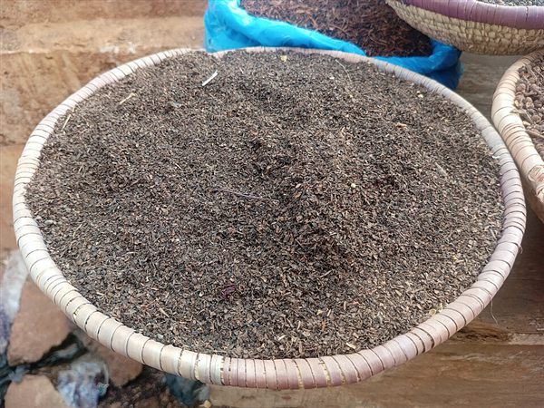
Composted bark chips that keep a mix open and suit acid-loving plants.
Watch: use composted bark; fresh bark robs soil of nitrogen.
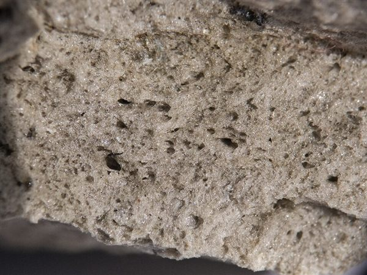
Volcanic rock that drains as well as perlite but stays put instead of floating.
Best for: succulents, bonsai and heavy containers that need stability.
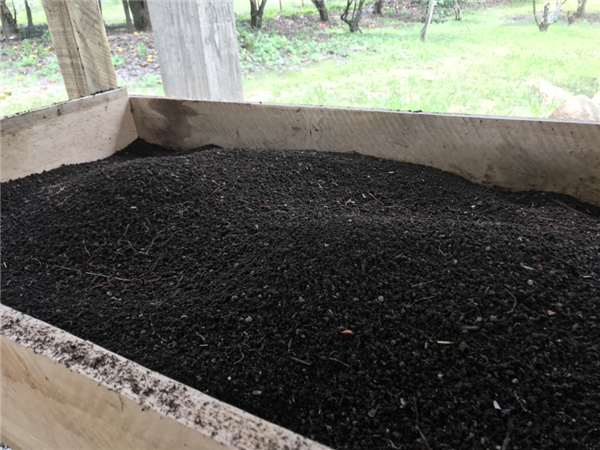
Vermicompost: nutrient-rich, microbe-rich pellets that give plants a gentle boost.
Watch: a supplement, not a base — too much is costly and rich.
| Medium | Indoor pots | Outdoor containers | Main job | Watch out for |
|---|---|---|---|---|
| Cocopeat / coir | 30–60% | 20–40% | Water-holding, peat-free base | Low nutrients; must be washed |
| Perlite | 10–30% | 10–20% | Air pockets and drainage | Dust and floating granules |
| Potting soil mix | 50–70% | 60–80% | Main body of the mix | Variable quality; never raw garden soil |
| Compost | 20–40% | 20–50% | Nutrients and soil life | Immature or heavy compost |
| Vermiculite | 10–20% | 5–15% | Holds water and nutrients | Soggy mix if overused |
| Clay pebbles / LECA | 10–30% | 10–20% | Drainage layer or hydroponics | No nutrients; salt build-up |
| Pine bark | 10–30% | 10–20% | Structure, acidity for ericaceous plants | Fresh bark ties up nitrogen |
| Pumice / grit | 10–40% | 10–30% | Free drainage and weight | Heavy in hanging baskets |
| Worm castings | 5–15% | 5–10% | Gentle nutrients and microbes | Cost; too rich in large doses |
| Recipe | Base | Organic | Drainage | Best for |
|---|---|---|---|---|
| Everyday houseplants | 50% cocopeat | 30% compost | 20% perlite | Pothos, philodendron, monstera, ferns |
| Gritty succulent mix | 30% cocopeat + 25% potting soil | 0% compost | 45% pumice / coarse grit | Cacti, echeveria, jade, aloe |
Outdoor containers need more water-holding material than indoor pots because sun and wind dry them faster. Add an extra 10% compost or coir and mulch the surface — but keep the drainage holes clear.
| Problem | Amendment | How to apply |
|---|---|---|
| Too sandy / drains instantly | Compost, aged manure, coir | 5–8 cm layer dug in or mulched annually |
| Heavy clay | Compost, gypsum (if sodic), grit | Top-dress and let worms incorporate; never dig wet |
| Too acidic | Garden lime, wood ash (sparingly) | Per soil test; re-test after 3 months |
| Too alkaline | Elemental sulphur, pine compost | Small amounts in autumn; takes 6–12 months |
| Poor drainage in pots | Perlite, pumice, bark | 25–40% of the mix by volume |
| Low fertility | Compost, balanced organic feed | Feed the soil, not just the plant |
The plant library filters by category, light and difficulty — so you only see plants that can actually thrive where you are.
Open the plant library →